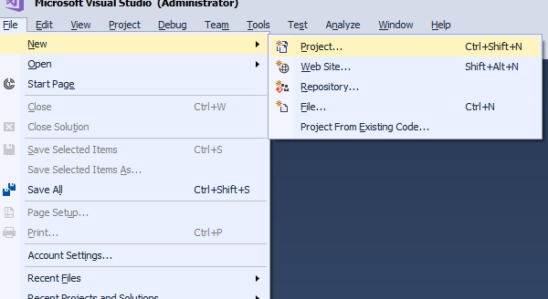
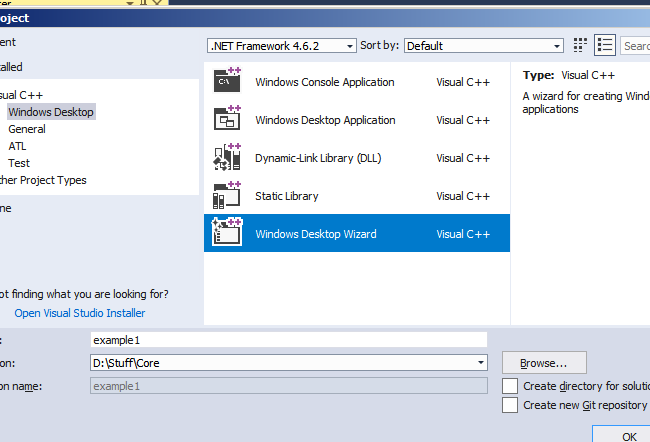
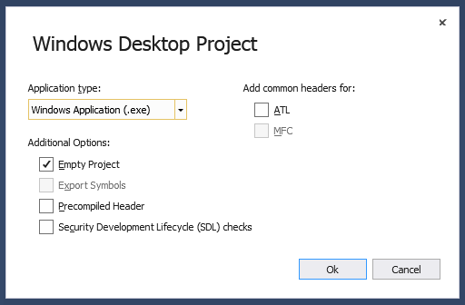
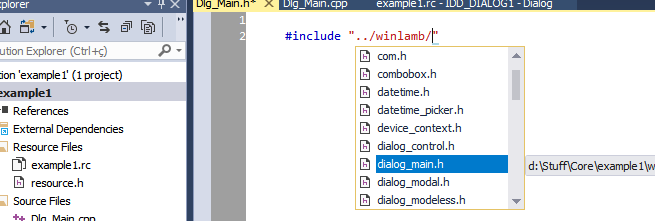
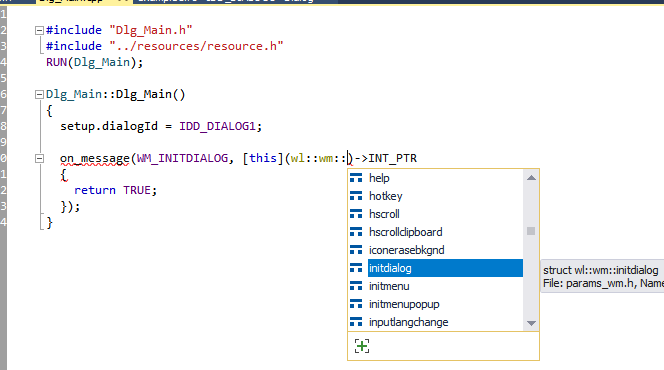
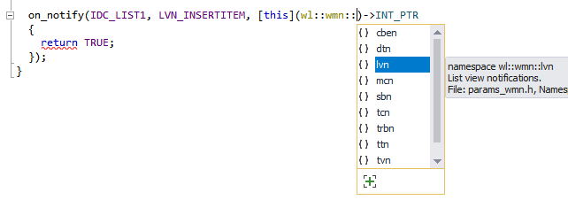
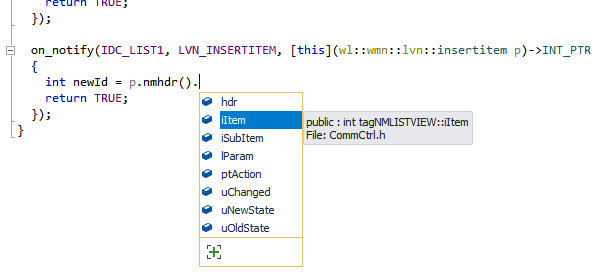

Please choose 'View Source' in your browser to view the HTML, or File | Save to save this file to your hard drive for editing.
First of all, this article assumes the reader is familiar with native Win32 programming and C++11.
Before explaining what it is, I’ll start showing what a Win32 program can look like with WinLamb. The following is a full program with a single window. Note that there’s no message loop, no window class registering, no switch statement or message maps. And two messages are handled, each with a C++11 lambda:
// Declaration: SimpleMainWindow.h
#include "winlamb/window_main.h"
class SimpleMainWindow : public wl::window_main {
public:
SimpleMainWindow();
};
// Implementation: SimpleMainWindow.cpp
#include "SimpleMainWindow.h"
RUN(SimpleMainWindow);
SimpleMainWindow::SimpleMainWindow()
{
setup.wndClassEx.lpszClassName = L"SOME_CLASS_NAME";
setup.title = L"This is my window";
setup.style |= wl::ws::MINIMIZEBOX;
on_message(WM_CREATE, [&](wl::params p)->LRESULT
{
set_text(L"A new title for the window");
return 0;
});
on_message(WM_LBUTTONDOWN, [&](wl::params p)->LRESULT
{
set_text(L"Window clicked!");
return 0;
});
}
To compile this code, you’ll need a C++11 compiler. All examples on this article have been compiled and tested with Visual C++ 2017.
The raw & usual way to create a native Windows C program is described in depth by Charles Petzold in his classic Programming Windows book. Since then, many object-oriented libraries – like MFC and WTL – have been written offering C++ approaches to deal with native Windows programming.
WinLamb – an uninspired acronym of Windows and lambda – is another object-oriented C++ library. It’s a header-only library which depends on nothing but pure Win32 and the C++ Standard Template Library, and it heavily relies upon modern C++11 features (well, actually C++14 and C++17 too).
WinLamb is a thin layer over Win32 API. It can be divided into three main parts:
On the list above, (2) and (3) are optional. If you have another library or your own set of classes, you can use them instead.
WinLamb is fully implemented using Unicode Win32, with wchar_t and std::wstring everywhere.
Installation is pretty straightforward: since the library is head-only, you just need to download the files and #include them in your project. They should work right away. All the classes are enclosed within wl namespace.
Since it heavily relies upon C++11 and even some C++14 and C++17 features, you need a compatible C++ compiler. Current version was developed and tested with Visual C++ 2017.
Errors are reported by throwing exceptions. WinLamb doesn’t have any custom exception, it only throws ordinary STL exceptions. All exceptions inherit from std::exception, so if you catch it, you’re guaranteed to catch any possible exception from WinLamb.
Last but not least: WinLamb isn’t an excuse to not learn Win32 – before start using WinLamb, I strongly advice the reader to learn the basics on how to write a Win32 program using plain C.
WinLamb source is available on GitHub as open-source under the MIT license.
WinLamb is a header-only C++ library. The most up-do-date code can be found at GitHub, you can clone the repository or simply download the files.
The simplest way to have the library in your project is simply keep
all the files in a subfolder called, for example, “winlamb”, then #include them in your sources.
Here it is presented how to create a fresh new WinLamb Win32 project using Visual C++ IDE, from scratch. You can skip this section straight into the code.
To start, first create the new project:

Choose “Windows Desktop Wizard”. The “.NET Framework” option doesn”t matter, since we”re writing a pure Win32 program, without the .NET Framework. Here, I named the project “example1”.

Choose “Windows Application”. Uncheck everything but “Empty project”. This will create a completely empty project for us.

Finally, create a subdirectory named, for example, “winlamb”, and put WinLamb files there. Then create your source files normally; you should be able to include WinLamb files now:

Notice that the library has an “internals” subdirectory. This is where all internal library files are located; you shouldn’t need to touch these.
Once the project is ready, it’s time to use WinLamb to wrap up our windows.
Under the most common cases, the first thing you must design when creating a Win32 program is the main window. So let’s start with the declaration of the main window class – in WinLamb, each window has a class. It’s a good idea to have 1 header and (at least) 1 source file for each window. Technically the main window doesn’t need a header, but for consistency, let’s write one.
All WinLamb library classes belong to the wl namespace. Our main window class will inherit from window_main class. Let’s also declare the constructor:
// Declaration: MyWindow.h
#include "winlamb/window_main.h"
class MyWindow : public wl::window_main {
public:
MyWindow();
};
For the program entry point, you can write your WinMain function and instantiate MyWindow manually, if you want. However, if you aren’t doing anything special on WinMain, you can simply use WinLamb’s RUN macro – the only macro in the whole library, I promise –, which will simply expand into a WinMain call instantiating your class on the stack. This is the macro call:
RUN(MyWindow);
And then implement the class constructor. Thus, that’s what we have in our source file, so far:
// Implementation: MyWindow.cpp
#include "MyWindow.h"
RUN(MyWindow); // will generate a WinMain function
MyWindow::MyWindow()
{
}
If you compile and run this code, the window will fail to show, because we didn’t specify the window class name. When the class is instantiated, the base window_main will call RegisterClassEx internally, and it will use a WNDCLASSEX structure with a few predetermined values – these values, however, don’t specify the class name to be registered.
The base class provides a setup member variable which holds all initialization values for the class. To an experienced Win32 programmer, the members of this structure will be familiar: they are the parameters of the CreateWindowEx function, plus the wndClassEx member, which is the WNDCLASSEX structure, which is passed to RegisterClassEx. This wndClassEx member, however, hides the members that are internally set by WinLamb.
Thus, we must define the class name at lpszClassName member, and do this inside the constructor:
// Implementation: MyWindow.cpp
#include "MyWindow.h"
RUN(MyWindow);
MyWindow::MyWindow()
{
setup.wndClassEx.lpszClassName = L"HAPPY_LITTLE_CLASS_NAME";
}
The wndClassEx member has style, and setup itself has style and exStyle. These two scoped enumerations are already filled with default flags, specified by WinLamb:
setup.wndClassEx.style = wl::wc::DBLCLKS;
setup.style = wl::ws::CAPTION | wl::ws::SYSMENU | wl::ws::CLIPCHILDREN | wl::ws::BORDER;
You can overwrite these values, of course. However, they are common to most windows, and most of the time you’ll just want to add a flag. For example, if you want your main window to be resizable and minimizable, you just need this:
setup.style |= (wl::ws::SIZEBOX | wl::ws::MINIMIZEBOX);
Therefore, also adding the window title, we have:
// Implementation: MyWindow.cpp
#include "MyWindow.h"
RUN(MyWindow);
MyWindow::MyWindow()
{
setup.wndClassEx.lpszClassName = L"HAPPY_LITTLE_CLASS_NAME";
setup.title = L"My first window";
setup.style |= (wl::ws::SIZEBOX | wl::ws::MINIMIZEBOX);
}
The program should compile and run fine now. Yes, this is a fully functional Win32 program, including window class registering, window creation, message loop dispatching and final cleanup – all this infrastructure code is transparent.
Note: WinLamb classes make use of Set/GetWindowLongPtr with GWLP_USERDATA and DWLP_USER flags for storing context data. Since you have a class for your window, where you can have all the members you want, I can’t really imagine a reason for using these on your code, but I’m warning you just in case: don’t use GWLP_USERDATA and DWLP_USER to store your data.
The traditional way to handle window messages is a big switch statement inside the WNDPROC function. Some libraries define macros to avoid the “big switch”.
In our program using WinLamb, we’ll use C++11 lambdas. The window_main base class provides the on_message member function, which receives two arguments: the message to be handled and a function to handle it:
void on_message(UINT message, std::function<LRESULT(wl::params)>&& func);
The easiest way to use it is passing an unnamed lambda function inline. For example, let’s handle the WM_CREATE message in our main window class constructor:
MyWindow::MyWindow()
{
setup.wndClassEx.lpszClassName = L"HAPPY_LITTLE_CLASS_NAME";
on_message(WM_CREATE, [](wl::params p)->LRESULT
{
return 0;
});
}
The lambda receives a params argument, which has the WPARAM and LPARAM members – more on this later. Note that the lambda must return an LRESULT value, just like any ordinary WNDPROC message processing.
Note: in an ordinary window, you would have to handle WM_DESTROY in order to call PostQuitMessage. WinLamb implements default message processing for a few messages, using the default behavior, so you don’t have to worry about them. But they can be orverwritten if you need something specific – in the above example, if we write a handler to WM_DESTROY, the default library code would be completely bypassed. More on this later.
Now, if you happen to have two messages which will demand the same processing, on_message also accepts an initializer_list as the first argument:
on_message({WM_LBUTTONUP, WM_RBUTTONUP}, [](wl::params p)->LRESULT
{
UINT currentMsg = p.message;
return 0;
});
This is functionally equivalent of:
switch (LOWORD(wParam))
{
case WM_LBUTTONUP:
case WM_RBUTTONUP:
// some code...
return 0;
}
Tip: if your window handles too many messages, the class constructor can become quite large and hard to follow. In these situations, breaking the handlers into member functions is helpful:
// Declaration: MyWindow.h
class MyWindow : public wl::window_main {
public:
MyWindow();
private:
void attachHandlers();
void evenMoreHandlers();
};
// Implementation: MyWindow.cpp
#include "MyWindow.h"
RUN(MyWindow);
MyWindow::MyWindow()
{
setup.wndClassEx.lpszClassName = L"HAPPY_LITTLE_CLASS_NAME";
attachHandlers();
evenMoreHandlers();
}
void MyWindow::attachHandlers()
{
on_message(WM_CREATE, [](wl::params p)->LRESULT
{
return 0;
});
on_message(WM_CLOSE, [](wl::params p)->LRESULT
{
return 0;
});
}
void MyWindow::evenMoreHandlers()
{
on_message(WM_SIZE, [](wl::params p)->LRESULT
{
WORD width = LOWORD(p.lParam);
return 0;
});
}
To finally work with the window, the hwnd member function can be used to retrieve the window’s HWND:
on_message(WM_CREATE, [this](wl::params p)->LRESULT
{
SetWindowText(hwnd(), L"New window title");
return 0;
});
But there’s a set_text method available to be used within the window, so:
on_message(WM_CREATE, [this](wl::params p)->LRESULT
{
set_text(L"New window title");
return 0;
});
In the previous example, we created an ordinary main window – in pure Win32, it would be the equivalent of calling RegisterClassEx and CreateWindowEx, among other proceedings.
But it is also possible to have a dialog box as the main window of your program. This possibility is covered in WinLamb, if you inherit your main window from the dialog_main class:
// Declaration: FirstDialog.h
#include "winlamb/dialog_main.h"
class FirstDialog : public wl::dialog_main {
public:
FirstDialog();
};
With dialogs you don’t deal with WNDCLASSEX directly, there’s no need to register a window class name. That’s why the setup member variable doesn’t have the wndClassEx member, instead it allows you to specify the ID of the dialog resource to be loaded.
Usually, dialog resources are created with resource editors, like the one Visual Studio has. An example of a dialog creation can be seen here. Now, assuming the dialog resource is already created, let’s use the dialog ID:
// Implementation: FirstDialog.cpp
#include "FirstDialog.h"
#include "resource.h" // contains the dialog resource ID
RUN(FirstDialog);
FirstDialog::FirstDialog()
{
setup.dialogId = IDD_MY_FIRST_DIALOG; // specify dialog ID
on_message(WM_INITDIALOG, [this](wl::params p)->INT_PTR
{
set_text(L"A new title for the dialog");
return TRUE;
});
}
Here, on_message has some minor differences to follow the dialog box DLGPROC message processing, like the INT_PTR return type, and returning TRUE instead of zero.
Still on the previous example, let’s say the dialog resource has an edit box, with IDC_EDIT1 as the resource ID. WinLamb has the textbox class, which wraps an edit box. To use it, declare the textbox object as a member of the parent class:
// Declaration: FirstDialog.h
#include "winlamb/dialog_main.h"
#include "winlamb/textbox.h"
class FirstDialog : public wl::dialog_main {
private:
wl::textbox edit1; // our control object
public:
FirstDialog();
};
On the control object, call assign method, which will call GetDlgItem and store the HWND inside the object. After that, the widget is ready to be used:
// Implementation: FirstDialog.cpp
#include "FirstDialog.h"
#include "resource.h" // contains the dialog resource IDs
RUN(FirstDialog);
FirstDialog::FirstDialog()
{
setup.dialogId = IDD_MY_FIRST_DIALOG;
on_message(WM_INITDIALOG, [this](wl::params p)->INT_PTR
{
edit1.assign(this, IDC_EDIT1)
.set_text(L"This is the edit box.")
.set_focus();
return TRUE;
});
}
Note that assign and set_text methods both return a reference to the object itself, so other method calls can be chained. This is a common behavior to most objects in WinLamb.
A modal popup dialog is a window created via DialogBoxParam. Let’s implement a modal dialog with its header and source files. Then, we will instantiate this modal in a parent window.
This is the header of our modal dialog, which inherits from dialog_modal class:
// Declaration: MyModal.h
#include "winlamb/dialog_modal.h"
class MyModal : public wl::dialog_modal {
public:
MyModal();
};
The implementation is pretty much like any other dialog window – you must inform the ID of the dialog resource to be loaded –, but remember modal dialogs are destroyed by calling EndDialog, with the second parameter of this function being the return value of the original dialog call.
// Implementation: MyModal.cpp
#include "MyModal.h"
#include "resource.h" // contains dialog resource ID
MyModal::MyModal()
{
setup.dialogId = IDD_DIALOG2;
on_message(WM_COMMAND, [this](wl::params p)->INT_PTR
{
if (LOWORD(p.wParam) == IDCANCEL) // the ESC key
{
EndDialog(hwnd(), 33); // modal will return 33, see the next example
return TRUE;
}
return FALSE;
});
}
Now let’s revisit the implementation of our main window, which will now use the modal dialog by instantiating the object and calling the show method. Since the dialog is modal, the show method will block the execution and will return only after the dialog is closed.
// Implementation: MainWindow.cpp
#include "MainWindow.h"
#include "MyModal.h" // our modal dialog header
RUN(MainWindow);
MainWindow::MainWindow()
{
on_message(WM_COMMAND, [this](wl::params p)->LRESULT
{
if (LOWORD(p.wParam) == IDC_SHOWMODAL) // some button to open the modal
{
MyModal modalDlg;
int retVal = modalDlg.show(this); // blocks until return; retVal receives 33
return 0;
}
return DefWindowProc(hwnd(), p.message, p.wParam, p.lParam);
});
}
If the modal asks user input, it’s common for the modal to return constants like IDOK or IDCANCEL.
The modal dialog can also receive any parameters on the constructor, just like any class, and have public methods to return something:
class MyModal : public wl::dialog_modal {
public:
MyModal(std::wstring name, int number);
std::wstring getName();
};
Then the instantiation by the parent window, with a more elaborated example:
on_message(WM_COMMAND, [this](wl::params p)->LRESULT
{
if (LOWORD(p.wParam) == IDC_BTNSHOWMODAL)
{
MyModal modalDlg(L"Hello modal", 800); // instantiate the modal
if (modalDlg.show(this) != IDCANCEL) {
std::wstring foo = modalDlg.getName();
}
return 0;
}
return DefWindowProc(hwnd(), p.message, p.wParam, p.lParam);
});
Modal dialogs can pop other modal dialogs, as well.
A modeless popup dialog differs from the modal, since modeless dialogs are created via CreateDialogParam. This is an example of a declaration:
// Declaration: MyModeless.h
#include "winlamb/dialog_modeless.h"
class MyModeless : public wl::dialog_modeless {
public:
MyModeless();
};
And the implementation, pretty much like the previous examples:
// Implementation: MyModeless.cpp
#include "MyModeless.h"
#include "resource.h"
MyModeless::MyModeless()
{
setup.dialogId = IDD_DIALOG3;
on_message(WM_INITDIALOG, [](wl::params p)->INT_PTR
{
return TRUE;
});
}
Very important: once a modeless dialog is created, it will live alongside its parent window – modeless dialogs have no message loop for themselves. For this reason, attention must be paid to the declaration scope. The modeless object must be declared as a member of its parent:
// Declaration: MainWindow.h
#include "winlamb/window_main.h"
#include "MyModeless.h" // our modeless dialog header
class MainWindow : public wl::window_main {
private:
MyModeless mless; // modeless as a member
public:
MainWindow();
};
This way, after we created it, the variable won’t go out of scope after the caller function returns:
// Implementation: MainWindow.cpp
#include "MainWindow.h"
RUN(MainWindow);
MainWindow::MainWindow()
{
on_message(WM_CREATE, [this](wl::params p)->LRESULT
{
mless.show(this); // modeless dialog is now alive
return 0;
});
}
If we had declared mless object inside on_message’s lambda – just like we did on the previous example with the modal dialog –, mless would go out of scope right after the lambda returns, thus being destroyed while the modeless window is still alive. Then, as the modeless would come to process its first message, mless object would no longer exist.
Scope is very important with lambdas.
A modeless dialog is destroyed with a DestroyWindow call. By default, WinLamb handles WM_CLOSE with a call to DestroyWindow, so if you send WM_CLOSE to your modeless, it will be destroyed right away.
Now if you have used modeless windows with pure Win32, you may be wondering about the problems they introduce in the window message dispatching. Worry not: WinLamb was designed to treat these problems internally – this pain is gone.
A custom control is a window designed to be a child of another window. It will inherit from window_control:
// Declaration: MyWidget.h
#include "winlamb/window_control.h"
class MyWidget : public wl::window_control {
public:
MyWidget();
};
The implementation can look like this:
// Implementation: MyWidget.cpp
#include "MyWidget.h"
MyWidget::MyWidget()
{
setup.wndClassEx.lpszClassName = L"HAPPY_LITTLE_WIDGET";
setup.wndClassEx.hbrBackground = reinterpret_cast<HBRUSH>(COLOR_BTNFACE + 1);
setup.exStyle |= wl::wsx::CLIENTEDGE;
setup.style |= (wl::ws::TABSTOP | wl::ws::GROUP | wl::ws::HSCROLL);
on_message(WM_PAINT, [this](wl::params p)->LRESULT
{
PAINTSTRUCT ps{};
HDC hdc = BeginPaint(hwnd(), &ps);
EndPaint(hwnd(), &ps);
return 0;
});
on_message(WM_ERASEBKGND, [](wl::params p)->LRESULT
{
return 0;
});
}
For the very same reasons of the aforementioned modeless dialog example, you must declare the child window as a member of the parent:
// Declaration: ParentWindow.h
#include "winlamb/window_main.h"
#include "MyWidget.h" // our custom control header
class ParentWindow : public wl::window_main {
private:
MyWidget widgetFoo1, widgetFoo2; // let’s have two of them
public:
ParentWindow();
};
To create the control, the parent must call its create member function, which receives: the this pointer of the parent, the control ID we want to give it, a SIZE for the control size, and a POINT for the position within the parent:
// Implementation: ParentWindow.cpp
#include "ParentWindow.h"
RUN(ParentWindow);
#define WIDG_FIRST 40001
#define WIDG_SECOND WIDG_FIRST + 1
ParentWindow::ParentWindow()
{
setup.wndClassEx.lpszClassName = L"BEAUTIFUL_PARENT";
on_message(WM_CREATE, [this](wl::params p)->LRESULT
{
widgetFoo1.create(this, WIDG_FIRST, {10,10}, {150,100});
widgetFoo2.create(this, WIDG_SECOND, {10,200}, {150,320});
return 0;
});
}
These are the predefined values of style for the window_control:
setup.wndClassEx.style = wl::wc::DBLCLKS;
setup.style = wl::ws::CHILD | wl::ws::VISIBLE | wl::ws::CLIPCHILDREN | wl::ws::CLIPSIBLINGS;
It is also possible to embed a dialog as a child of a window, or as a child of another dialog. To build such a child dialog, inherit it from dialog_control class:
// Declaration: MyDlgWidget.h
#include "winlamb/dialog_control.h"
class MyDlgWidget : public wl::dialog_control {
public:
MyDlgWidget();
};
To work properly, a control dialog must have some specific styles – this is a requirement from Win32, not from WinLamb. With Visual Studio resource editor, these are the styles:
Given the previous examples, I believe the implementation of a control dialog is trivial at this point of the article.
Beyond providing the ability to use lambdas to handle messages, WinLamb also offers facilities to deal with the message contents.
So far, we only used on_message to handle Windows messages on our windows and dialogs. Beyond that, there are two other specialized methods to deal with WM_COMMAND and WM_NOTIFY messages specifically:
void on_command(WORD cmd, std::function<INT_PTR(wl::params)>&& func);
void on_notify(UINT_PTR idFrom, UINT code, std::function<INT_PTR(wl::params)>&& func);
These are shorthands and have the same effect of manually switching within WM_COMMAND and WM_NOTIFY messages.
on_command(IDOK, [this](wl::params p)->INT_PTR
{
set_text(L"OK button clicked.");
return TRUE;
});
WM_NOTIFY identifier receives two parameters – the ID of the control and the notification code – according to NMHDR structure:
on_notify(IDC_LISTVIEW1, LVN_DELETEITEM, [this](wl::params p)->INT_PTR
{
set_text(L"Item deleted from list view.");
return TRUE;
});
Both functions also accept an initializer_list to handle multiple messages at once.
When handling a message, your lambda always receive a single wl::params argument:
on_message(WM_MENUSELECT, [](wl::params p)->LRESULT
{
return 0;
});
The wl::params is a simple struct with 3 members, which are familiar to anyone who ever wrote a Win32 program. This is the declaration which can be found inside WinLamb:
struct params {
UINT message;
WPARAM wParam;
LPARAM lParam;
};
However, for almost all Windows messages, the WPARAM and LPARAM members contain packed data, varying accordingly to the message being handled. For example, for WM_MENUSELECT, this is what they carry:
To retrieve these data, you must perform casts, extract bitflags, and be sure of what you’re doing.
To alleviate this burden, WinLamb provides unpackers for (hopefully) all documented Windows messages. These unpackers are simply structs derived from wl::params, adding the unpacking methods. They are enclosed within the wl::wm namespace.
For example, let’s take WM_MENUSELECT. In the following example, the declaration of wl::params is replaced by wl::wm::menuselect, and that’s all you need to do. Notice the methods being called on p:
on_message(WM_MENUSELECT, [](wl::wm::menuselect p)->LRESULT
{
if (p.is_checked() || p.has_bitmap()) {
HMENU hMenu = p.hmenu();
WORD itemIndex = p.item();
}
return 0;
});
This is functionally equivalent of painfully unpacking the data manually, like this:
on_message(WM_MENUSELECT, [](wl::params p)->LRESULT
{
if ((HIWORD(p.wParam) & MF_CHECKED) || (HIWORD(p.wParam) & MF_BITMAP)) {
HMENU hMenu = reinterpret_cast<HMENU>(p.lParam);
WORD itemIndex = LOWORD(p.wParam);
}
return 0;
});
Use the message crackers as much as you can. They are safer and they save you time, plus they look nice under IntelliSense:

Common controls send notifications through WM_NOTIFY message, which has a different approach from ordinary messages. For common controls, the data comes packed into an NMHDR struct, or an struct that contains it.
WinLamb also has crackers for these notifications, they are enclosed within the wl::wmn namespace. Notice the separation here:
wl::wm namespace;wl::wmn namespace.Within wl::wmn, there is one nested namespace to each common control, so the notifications of each control are kept separated. These namespaces are named following the same convention of the notification itself. For example, list view notifications, which are prefixed with LVN_, belong to the wl::wmn::lvn namespace.

For example, this is how we crack a LVN_INSERTITEM notification:
on_notify(IDC_LIST1, LVN_INSERTITEM, [](wl::wmn::lvn::insertitem p)->INT_PTR
{
int newId = p.nmhdr().iItem;
return TRUE;
});
Notice that p has an nmhdr member function. This function will return the exact type according to the notification; in the above example, nmhdr will return a reference to an NMLISTVIEW struct, which contains NMHDR. IntelliSense will list all the members:

Control subclassing is an operation normally done with the aid of SetWindowSubclass Win32 function. You provide a SUBCLASSPROC callback function, which is very similar to WNDPROC and DLGPROC, and handle specific messages from there.
WinLamb’s approach to control subclassing is to instantiate an object of subclass type, then attach it to an existing control. For example, retaking the edit control example, let’s subclass the edit control. First, we add a subclass member to our class:
// Declaration: FirstDialog.h
#include "winlamb/dialog_main.h"
#include "winlamb/textbox.h"
#include "winlamb/subclass.h"
class FirstDialog : public wl::dialog_main {
private:
wl::textbox edit1; // our control object
wl::subclass edit1sub; // edit subclasser object
public:
FirstDialog();
};
To handle the methods within the subclassing, we just call on_message on the subclass object. It works the same way of windows and dialogs, except we’re handling a message from SUBCLASSPROC callback procedure:
edit1sub.on_message(WM_RBUTTONDOWN, [](wl::params p)->LRESULT
{
// subclass code...
return 0;
});
After adding the messages, we’ll have a subclass object stuffed with handlers, but it still does nothing. We install the subclass after we initialize the control by calling assign. This is the full implementation:
// Implementation: FirstDialog.cpp
#include "FirstDialog.h"
#include "resource.h"
RUN(FirstDialog);
FirstDialog::FirstDialog()
{
setup.dialogId = IDD_MY_FIRST_DIALOG;
edit1sub.on_message(WM_RBUTTONDOWN, [](wl::params p)->LRESULT
{
// subclass code for edit1...
return 0;
});
on_message(WM_INITDIALOG, [this](wl::params p)->INT_PTR
{
edit1.assign(this, IDC_EDIT1); // init control
edit1sub.install_subclass(edit1); // subclass installed and ready
return TRUE;
});
}
Note that, in this example, we added the edit1sub handler before the WM_INITIDALOG, but this is not required. Since the lambdas are called asynchronously, the order we attach them doesn’t matter. We can attach the edit1sub messages after WM_INITDIALOG as well, in any order.
The subclass object also has on_command and on_notify member functions, and it can be detached at any time by calling remove_subclass.
Summing up, these are all WinLamb window base classes your window can inherit from:
window_main – creates the main window of the program, encapsulating the message loop, window registering and window creation through CreateWindowEx;dialog_main – creates the main window of the program using a dialog box, through CreateDialogParam, and takes care of the message loop;dialog_modal – creates a modal dialog box through DialogBoxParam;dialog_modeless – creates a modeless dialog box through CreateDialogParam;window_control – creates a custom child window through CreateWindowEx, to be used as a control within a parent window;dialog_control – a dialog created with CreateDialogParam to be used as a control within a parent window.WinLamb also have wrappers for many native controls, like listview, textbox, combobox, etc.
Window subclassing can also be automated.
The window classes provide default processing for some messages. If you write a handler to one of these messages, the default processing will be overwritten. Below is a list of the messages which have a default processing, and what they do:
window_main – WM_NCDESTROY (calls PostQuitMessage);dialog_main – WM_CLOSE (calls DestroyWindow), WM_NCDESTROY (calls PostQuitMessage);dialog_modal – WM_CLOSE (calls EndDialog);dialog_modeless – WM_CLOSE (calls DestroyWindow);window_control and dialog_control – WM_NCPAINT (paints control borders, if any).As far as I can remember, around 2002 I started wrapping all my Win32 routines in classes, to make them reusable to myself, to save my time. Through all these years it took the form of a real library, a thin abstraction layer over raw Win32. People who saw it often commented that it was good, so in 2017 I decided to publish it on GitHub.
Yeah, although it’s a modern C++11 library, actually it was 15 years old when I first published it.
Since WinLamb is what I use for my own personal programs, it’s likely to continue evolving with the time. Refactorings surely will occur, but the current architecture has been stable for many years, and it’s unlikely to have big breaking changes.
I have a couple full real-world projects tagged on GitHub. Everything is shared under the MIT license.
I’ll try to keep this article updated with the latest WinLamb version.